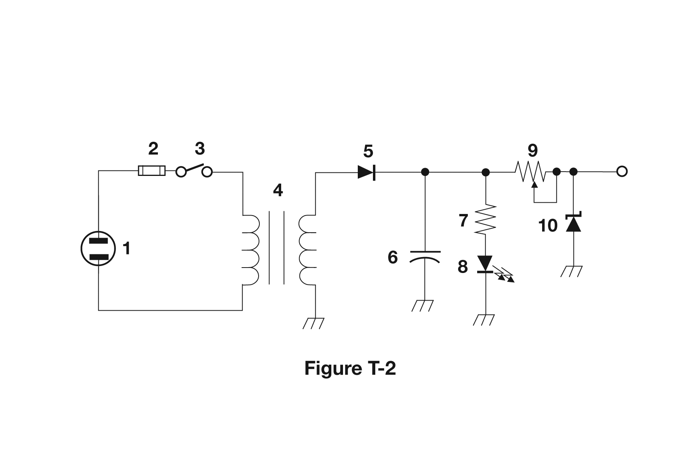
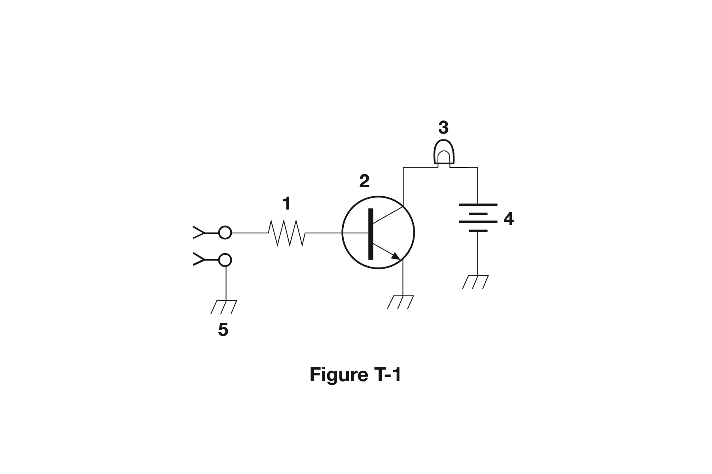
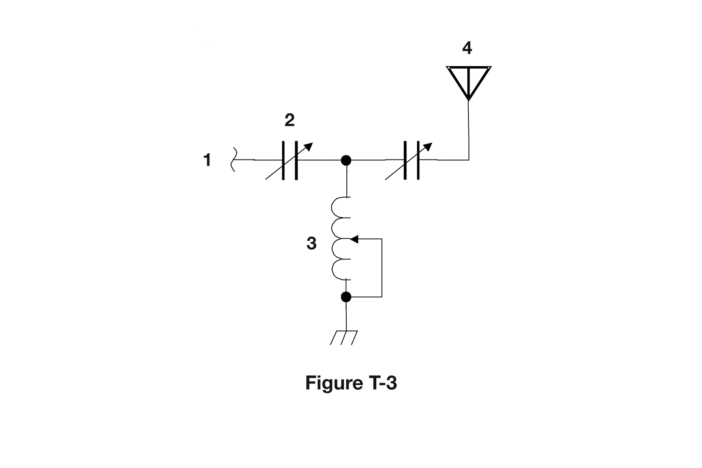

All 46 Ham Radio Technician questions for T6 Components with the correct answers marked and a short explanation for each, from the official 2026-2030 question pool. Test yourself with the free practice exam.
T6A01
What electrical component opposes the flow of current in a DC circuit?
A. Inductor
B. Resistor ✓
C. Inverter
D. Transformer
Why: A resistor opposes, or limits, the flow of current in a circuit, including DC circuits. Inductors mainly oppose changes in current, and transformers do not work with steady DC.
T6A02
What type of component is often used as an adjustable volume control?
A. Fixed resistor
B. Power resistor
C. Potentiometer ✓
D. Transformer
Why: A potentiometer is a variable resistor with a sliding contact, so turning its shaft changes resistance. That makes it ideal as an adjustable volume control.
T6A03
What electrical parameter is controlled by a potentiometer?
A. Inductance
B. Resistance ✓
C. Capacitance
D. Field strength
Why: A potentiometer is an adjustable resistor. Turning its control moves a wiper along a resistive element, changing the resistance between its terminals.
T6A04
What electrical component stores energy in an electric field?
A. Resistor
B. Capacitor ✓
C. Inductor
D. Diode
Why: A capacitor stores energy in the electric field between its plates when a voltage is applied. An inductor stores energy in a magnetic field instead.
T6A05
What type of electrical component consists of conductive surfaces separated by an insulator?
A. Resistor
B. Potentiometer
C. Oscillator
D. Capacitor ✓
Why: A capacitor is built from two conductive surfaces (plates) separated by an insulator called the dielectric. This structure lets it store charge in an electric field.
T6A06
What type of electrical component stores energy in a magnetic field?
A. Resistor
B. Capacitor
C. Inductor ✓
D. Diode
Why: An inductor stores energy in the magnetic field created by current flowing through it. Capacitors store energy in an electric field instead.
T6A07
What electrical component is typically constructed as a coil of wire?
A. Transistor
B. Capacitor
C. Diode
D. Inductor ✓
Why: An inductor is usually a coil of wire, sometimes wound around a magnetic core. Coiling the wire concentrates the magnetic field and increases inductance.
T6A08
What is the function of an SPDT switch?
A. A single circuit is opened or closed
B. Two circuits are opened or closed
C. A single circuit is switched between one of two other circuits ✓
D. Two circuits are each switched between one of two other circuits
Why: SPDT means single-pole double-throw: one circuit (pole) can be connected to either of two other circuits (throws). A switch that simply opens or closes one circuit is SPST.
T6A09
What type of switch is represented by component 3 in figure T-2?

A. Single-pole single-throw ✓
B. Single-pole double-throw
C. Double-pole single-throw
D. Double-pole double-throw
Why: A single-pole single-throw (SPST) switch has one moving contact that simply opens or closes one circuit, like an on/off switch. In schematics it is drawn as a single hinged line across one gap.
T6A10
Which of the following battery chemistries is rechargeable?
A. Nickel-metal hydride
B. Lithium-ion
C. Lead-acid
D. All these choices are correct ✓
Why: Nickel-metal hydride, lithium-ion and lead-acid batteries can all be recharged. They are common in handheld radios, portable gear and vehicles, so all choices are correct.
T6A11
Which of the following battery chemistries is not rechargeable?
A. Nickel-cadmium
B. Carbon-zinc ✓
C. Lead-acid
D. Lithium-ion
Why: Carbon-zinc cells are primary batteries designed for one-time use; trying to recharge them can cause leakage or rupture. Nickel-cadmium, lead-acid and lithium-ion are rechargeable.
T6B01
Which is true about forward voltage drop in a diode?
A. It is lower in some diode types than in others ✓
B. It is proportional to peak inverse voltage
C. It indicates that the diode is defective
D. It has no impact on the voltage delivered to the load
Why: Forward voltage drop depends on diode type. For example, a silicon diode drops about 0.7 volts, a germanium or Schottky diode drops less, and LEDs drop more. A voltage drop is normal, not a defect.
T6B02
What electronic component allows current to flow in only one direction?
A. Resistor
B. Fuse
C. Diode ✓
D. Driven element
Why: A diode conducts current in one direction, from anode to cathode, and blocks it in the other. This makes diodes useful for converting AC to DC.
T6B03
Which of these components can be used as an electronic switch?
A. Varistor
B. Potentiometer
C. Transistor ✓
D. Thermistor
Why: A transistor can act as an electronic switch: a small control current or voltage turns a larger current on or off. Varistors and thermistors change resistance with voltage or temperature.
T6B04
Which of the following components can consist of three regions of semiconductor material?
A. Alternator
B. Transistor ✓
C. Triode
D. Pentode
Why: A bipolar transistor has three semiconductor regions (NPN or PNP) forming the emitter, base and collector. Triodes and pentodes are vacuum tubes, not semiconductors.
T6B05
What type of transistor has a gate, drain, and source?
A. Varistor
B. Field-effect ✓
C. Hall-effect
D. Bipolar junction
Why: Field-effect transistors (FETs) have gate, drain and source terminals; voltage on the gate controls current between source and drain. Bipolar junction transistors instead have an emitter, base and collector.
T6B06
How is the cathode lead of a semiconductor diode often marked on the package?
A. With the word "cathode"
B. With a stripe ✓
C. With the letter C
D. With the letter K
Why: The cathode end of a diode is usually marked with a stripe or band on the package. This matches the bar in the schematic symbol where current exits.
T6B07
What causes a light-emitting diode (LED) to emit light?
A. Forward current ✓
B. Reverse current
C. Capacitively-coupled RF signal
D. Inductively-coupled RF signal
Why: An LED emits light when forward current flows through it, as electrons recombine at the junction and release energy as light. Reverse bias produces no light.
T6B08
What does the abbreviation FET stand for?
A. Frequency Emission Transmitter
B. Fast Electron Transistor
C. Free Electron Transmitter
D. Field Effect Transistor ✓
Why: FET stands for Field Effect Transistor. The voltage on its gate creates an electric field that controls current flowing between the source and drain.
T6B09
What are the names for the electrodes of a diode?
A. Plus and minus
B. Source and drain
C. Anode and cathode ✓
D. Gate and base
Why: A diode's two electrodes are the anode and the cathode. Conventional current flows from anode to cathode when the diode is forward biased.
T6B10
Which of the following can provide power gain?
A. Transformer
B. Transistor ✓
C. Reactor
D. Resistor
Why: A transistor can provide power gain: a small input signal controls a larger current from the power supply, producing a stronger output. Transformers can step voltage up but never increase power.
T6B11
What does the term gain mean in amplifiers?
A. The output signal voltage relative to the input signal voltage
B. The output signal current relative to the input signal current
C. The output signal power relative to the input signal power
D. All these choices are correct ✓
Why: Gain describes how much an amplifier increases a signal, and it can be stated as a ratio of output to input voltage, current, or power. So all three choices are correct.
T6B12
What are the names of the electrodes of a bipolar junction transistor?
A. Signal, bias, power
B. Emitter, base, collector ✓
C. Input, output, supply
D. Pole one, pole two, output
Why: A bipolar junction transistor (BJT) has three electrodes: emitter, base and collector. A small base current controls a larger collector-to-emitter current.
T6C01
What is an electrical diagram using standard component symbols called?
A. Connection chart
B. Instrumentation system
C. Schematic ✓
D. Flow chart
Why: A schematic is a diagram showing how components are connected using standard symbols. It shows electrical connections, not physical layout.
T6C02
What is component 1 in figure T-1?

A. Resistor ✓
B. Transistor
C. Battery
D. Connector
Why: Figure T-1 shows a simple circuit with a battery, resistor, transistor and lamp. Component 1 is the resistor, drawn with the standard zigzag line symbol. Resistors limit the current flowing in part of a circuit.
T6C03
What is component 2 in figure T-1?
A. Resistor
B. Transistor ✓
C. Indicator lamp
D. Connector
Why: Component 2 in figure T-1 is a transistor, drawn as a circle with three leads (base, collector, emitter) and an arrow on the emitter. It acts as a switch controlling current through the lamp.
T6C04
What is component 3 in figure T-1?
A. Resistor
B. Transistor
C. Lamp ✓
D. Ground symbol
Why: Component 3 in figure T-1 is a lamp, drawn as a circle containing an X or a filament loop. In this circuit it lights when the transistor allows current to flow through it.
T6C05
What is component 4 in figure T-1?
A. Resistor
B. Transistor
C. Ground symbol
D. Battery ✓
Why: Component 4 in figure T-1 is a battery, drawn as alternating long and short parallel lines. The long line is the positive terminal. It supplies the circuit's electrical energy.
T6C06
What is component 6 in figure T-2?
A. Resistor
B. Capacitor ✓
C. Regulator IC
D. Transistor
Why: Component 6 in figure T-2 is a capacitor, shown by the symbol of two parallel plates, one of which may be curved. In power supplies, capacitors are commonly used to smooth rectified voltage.
T6C07
What is component 8 in figure T-2?
A. Resistor
B. Inductor
C. Regulator IC
D. Light emitting diode ✓
Why: Component 8 in figure T-2 is a light emitting diode (LED). Its symbol is a diode (triangle and bar) with arrows pointing outward, showing light being emitted.
T6C08
What is component 9 in figure T-2?
A. Variable capacitor
B. Variable inductor
C. Variable resistor ✓
D. Variable transformer
Why: Component 9 in figure T-2 is a variable resistor, shown as a resistor zigzag with an arrow through or pointing to it. The arrow indicates the resistance can be adjusted.
T6C09
What is component 4 in figure T-2?
A. Variable inductor
B. Double-pole switch
C. Potentiometer
D. Transformer ✓
Why: Component 4 in figure T-2 is a transformer, shown as two coils side by side with parallel lines between them representing the iron core. It steps AC voltage up or down.
T6C10
What is component 3 in figure T-3?

A. Connector
B. Meter
C. Variable capacitor
D. Variable inductor ✓
Why: Component 3 in figure T-3 is a variable inductor, drawn as a coil with an arrow through it. An adjustable inductor is used in tuning circuits such as antenna matching networks.
T6C11
What is component 4 in figure T-3?
A. Antenna ✓
B. Transmitter
C. Dummy load
D. Ground
Why: Component 4 in figure T-3 is an antenna, the device at the end of the feed line that converts RF energy from the transmitter into radio waves, and radio waves back into RF for the receiver.
T6C12
Which of the following is accurately represented in electrical schematics?
A. Wire lengths
B. Physical appearance of components
C. Component connections ✓
D. All these choices are correct
Why: A schematic accurately shows how components are connected to each other. It does not represent wire lengths or what components physically look like.
T6D01
Which of the following devices or circuits changes an alternating current into a varying direct current signal?
A. Transformer
B. Rectifier ✓
C. Amplifier
D. Reflector
Why: A rectifier, built with one or more diodes, allows current to flow only one way, changing AC into pulsating (varying) DC. A filter then smooths it.
T6D02
What is a relay?
A. An electrically-controlled switch ✓
B. A current-controlled amplifier
C. An inverting amplifier
D. A pass transistor
Why: A relay is an electrically controlled switch: current through its coil creates a magnetic field that moves contacts, letting a small signal switch a separate circuit.
T6D03
Which of the following is a reason to use shielded wire?
A. To decrease the resistance of DC power connections
B. To increase the current carrying capability of the wire
C. To prevent coupling of unwanted signals to or from the wire ✓
D. To reduce receiver overload
Why: Shielded wire has a grounded conductive braid or foil around it, which keeps external signals from coupling into the wire and keeps signals on the wire from radiating out.
T6D04
Which of the following displays an electrical quantity as a numeric value?
A. Potentiometer
B. Transistor
C. Meter ✓
D. Relay
Why: A meter displays an electrical quantity such as voltage, current or resistance as a numeric value or needle reading. A potentiometer is a variable resistor, not a display.
T6D05
What type of circuit controls the amount of voltage from a power supply?
A. Regulator ✓
B. Oscillator
C. Filter
D. Phase inverter
Why: A voltage regulator keeps a power supply's output voltage steady despite changes in load or input voltage. An oscillator generates signals and a filter removes unwanted frequencies.
T6D06
What component changes 120 V AC power to a lower AC voltage for other uses?
A. Variable capacitor
B. Transformer ✓
C. Transistor
D. Diode
Why: A transformer uses two coils on a shared core to step AC voltage up or down. A step-down transformer reduces 120 V AC to a lower voltage, for example for a power supply.
T6D07
Which of the following is commonly used as a visual indicator?
A. LED ✓
B. FET
C. Zener diode
D. All these choices are correct
Why: LEDs are widely used as visual indicators, like power lights and status lamps, because they are efficient and long-lived. FETs and Zener diodes do not emit light.
T6D08
Which of the following is combined with an inductor to make a resonant circuit?
A. Resistor
B. Zener diode
C. Potentiometer
D. Capacitor ✓
Why: An inductor and a capacitor together form a resonant (tuned) circuit. At one frequency their reactances are equal and cancel, which is the circuit's resonant frequency.
T6D09
What is the name of a device that combines several semiconductors and other components into one package?
A. Transducer
B. Multi-pole relay
C. Integrated circuit ✓
D. Transformer
Why: An integrated circuit (IC) combines many transistors, diodes, resistors and other components on a single chip in one package. A transformer and relay are single components.
T6D10
What is the function of component 2 in figure T-1?
A. Give off light when current flows through it
B. Supply electrical energy
C. Control the flow of current ✓
D. Convert electrical energy into radio waves
Why: Component 2 in figure T-1 is a transistor. Its function is to control the flow of current, acting as a switch that turns the lamp on or off based on the base current.
T6D11
Which of the following is a resonant or tuned circuit?
A. An inductor and a capacitor in series or parallel ✓
B. A linear voltage regulator
C. A resistor circuit used for reducing standing wave ratio
D. A circuit designed to provide high-fidelity audio
Why: A resonant or tuned circuit consists of an inductor and a capacitor connected in series or in parallel. It responds strongly at one frequency, where inductive and capacitive reactance are equal.